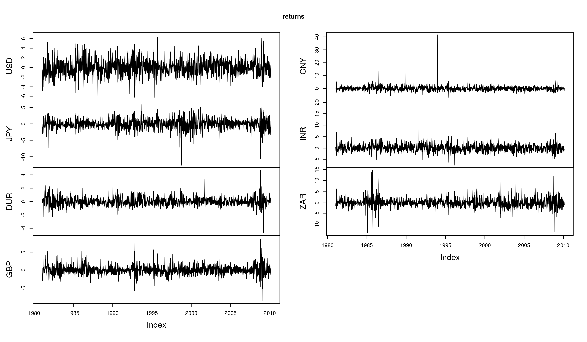
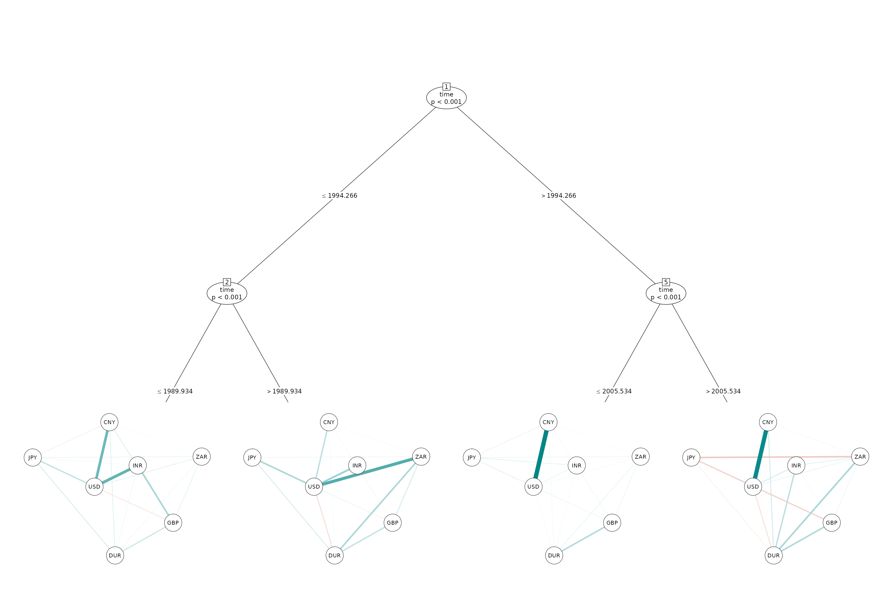

vignettes/returns.Rmd
returns.RmdWe use the FXRatesCHF data from package fxregime (Zeileis, Shah, and Patnaik 2013), which is a zoo series containing 25 daily time series over four decades. The columns correspond to the prices for various currencies w.r.t. CHF (Swiss Franc) as unit currency.
Here, we aim at investigating the network of weekly returns for seven currencies:
| Abbreviation | Full name |
|---|---|
| USD | US Dollar |
| JPY | Japanese Yen |
| DUR | A mixture of the German Mark (DEM, before 1999) and the Euro (EUR, since 1999) |
| CNY | Chinese Yuan |
| INR | Indian Rupee |
| GBP | Great British Pound |
| ZAR | South African Rand |
data("FXRatesCHF", package = "fxregime")
currencies <- c("USD", "JPY", "DUR", "CNY", "INR", "GBP", "ZAR")
returns <- fxregime::fxreturns(currencies, data = FXRatesCHF)
returns <- na.omit(returns)
plot(returns)
A quick look reveals that data are on hand from 1981-01-09 to 2010-02-12. Over the whole period the mean of each time series is around zero. Further the spread for each time series is relatively constant over time. However, the correlation structure between these seven variables might change within this period of time.
Before modelling the networktree we compute a numeric variable for the decimal time and put it in a column time, and for illustration we also add a nosie variable foo. Obviously, one can expect that time will be selected for splitting the data, but foo will not be selected.
returns$year <- as.POSIXlt(zoo::index(returns))$year
returns$isLeap <- (returns$year %% 4) == 0
returns$yday <- as.POSIXlt(zoo::index(returns))$yday
returns$time <- 1900 + returns$year + returns$yday / ifelse(returns$isLeap, 366, 365)
returns$foo <- rnorm(nrow(returns))Then we specify the formula object for our networktree. On the left hand side we put the variables among which the correlation structure has to be investigated, i.e. the currencies. On the right hand side the split variables are placed. Here, time and foo.
f <- paste(paste(currencies, collapse = " + "), "~ time + foo")
f <- as.formula(f)
f
## USD + JPY + DUR + CNY + INR + GBP + ZAR ~ time + fooWe put this formula into the networktree() function, where we also specify that only the correlations should be considered while splitting cor = TRUE (not the means and standard deviations). Further the tree should only grow to a maximum depth of three maxdepth = 3. The default method for the recursive partitioning is the model-based recursive partitioning (Zeileis, Hothorn, and Hornik 2008) implemented in the function mob() of the partykit package (Hothorn and Zeileis 2015).
tr <- networktree(f, data = returns, model = "correlation", maxdepth = 3)
print(tr, digits = 2)
## Network tree object
##
## Model formula:
## USD + JPY + DUR + CNY + INR + GBP + ZAR ~ time + foo
##
## Fitted party:
## [1] root
## | [2] time <= 1994.26575
## | | [3] time <= 1989.93425
## | | [4] time > 1989.93425
## | [5] time > 1994.26575
## | | [6] time <= 2005.53425
## | | [7] time > 2005.53425
##
## Number of inner nodes: 3
## Number of terminal nodes: 4
## Number of parameters per node: 21
## Objective function: 14073.5The print() method gives the partitioning of the data and the fitted coefficients which are the correlations between the exchange return rates of the different currencies. As expected only time was selected for splitting the data. In the first node the data are splitted in April 1994. Then in the second and fifth node the remaining data is splitted in December 1989 and July 2005, respectively.
plot(tr, transform = "pcor", posCol = "#008585", negCol = "#C7522B", maximum = 1)
## Registered S3 methods overwritten by 'huge':
## method from
## plot.sim BDgraph
## print.sim BDgraph
The plot() method uses qgraph() of the qgraph package (Epskamp et al. 2012) for visualizing the networks in the terminal nodes. Thus we can choose between looking at the correlations type = "cor" or at the partial correlations type = "pcor".
The partial correlation reveals a very strong link between the Chinese Yuan and the US Dollar after April 1994, but a weaker link before that point of time.
The split which was found in the second part of the data was July 2005 which coincide with an announcement of the People’s Bank of China (PBC) to shift away from a fixed exchange rate to the US Dollar to a basket of currencies with greater flexibility (Zeileis, Shah, and Patnaik 2010). Earlier studies also found that CNY was still strongly coupled to the USD after July 2005 (Zeileis, Shah, and Patnaik 2010). However, the split detected in mid 2005 by the networktree does not show a big change in the coupling of CNY to USD, but reveals that coupling of Indian Rupee, Chinese Yuan, and South African Rand to the Euro increased.
This content is published under Creative Commons Attribution-NonCommercial-ShareAlike 4.0 International (CC BY-NC-SA 4.0).